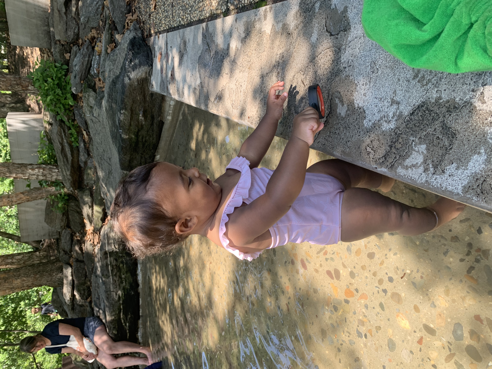

Adao

Adao loves soccer, walks outside, riding his bike, and throwing himself on the floor. He is a great actor. Adao is quite stubborn, but super helpful and sweet. He is vegetarian and his favorite color is currently teal. He is really excited about almost being 10 years old. Adao love mexican food and loves spicy things. His best friends are Tiyum and Justin. Adao is also currently into sneakers. He is hoping for a lizard or chameleon for his birthday.
Jaani

Jaani loves to dance, bubbles, and balls! Jaani has a balance bike that he loves to ride around the neighborhood. Jaani loves to sing, draw and play with playdough. Jaani is 2 years old and is innovative. He is often experimenting with his food. Jaani has a collection of cars. Within that collection, exists his collection of Pixar cars from the movie Cars. He goes bananas when his baby sister tries to play with his cars, especially Lightning Mcqueen. Jaani refuses to use the potty because he claims to really like his diapers. While he likes his diapers, Jaani does not like to wear pants.
Thena

Thena loves drums, sensory books, Jaani's cars, Jaani's bike and the toddler trampoline. Thena loves to look at our parakeets, and kiss herself in the mirror. She loves music and walks outside. Thena loves to bang on keyboards and her favorite show is Ms. Rachel. She loves watching her brothers' dance and make funny faces. Thena knows how to clap, point to things she wants and has learned her first words: "Adao" and "up." She is sassy and expects her brothers to cater to her. She loves waving at other children and dogs outside.